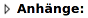

Kurzanleitung
Herzlich willkommen im Forum von ubuntuusers.de
Diese Kurzanleitung soll dir helfen, dich im Forum zurechtzufinden und einige häufige Fehler zu vermeiden.
Selbst nach einer Lösung suchen¶
Schon im Internet, Forum oder Wiki zu deinem Problem gesucht? Evtl. auch mal englische Suchwörter verwendet?
Tipp: Man kann im Suchfeld vieler Suchmaschinen die Suche auf das Wiki oder auf das Forum von ubuntuusers.de beschränken:
site:wiki.ubuntuusers.de SUCHWORTsite:forum.ubuntuusers.de SUCHWORT
Richtig im Forum fragen¶
→ Der Artikel Richtig fragen erläutert, wie man eigene Fragen optimal formuliert.
Eine Frage - ein Thema¶
Bei mehreren Fragen bitte mehrere Diskussionen (Threads) eröffnen und sich auch nicht an bestehende Diskussionen von anderen Benutzern anhängen (Thread-Entführung). Das erleichtert später anderen eine gezielte Suche nach bestimmten Problemstellungen.
Passende Rubrik im Forum auswählen¶
Im entsprechenden Unterforum/Rubrik als Wichtig markierte Themen beachten:
"Welche Themen gehören hier her und welche nicht?"
"Welche Angaben zum System sind für ein neues Thema nötig?"
→ Welches Thema gehört wohin? hilft bei der Einschätzung, in welchem Unterforum die Frage am besten aufgehoben ist.
Informationen beifügen¶
Aussagekräftiger, präziser Titel sowie Deine verwendete Distribution und Version
Wie äußert sich dein Problem genau? Welche konkrete Programmversion ist betroffen?
Was hast du selbst schon unternommen, um das Problem zu lösen, bevor du gefragt hast?
Warum haben deine Versuche nicht funktioniert (Fehlermeldungen o. Ä.)?
Gab es Änderungen an deinem Computer oder deinen Softwareeinstellungen, die dir relevant erscheinen?
Bildschirmfotos können eine Hilfestellung für den Helfer sein. Man sollte diese aber nur dann verwenden, wenn es ausdrücklich verlangt wird. Solange bestimmte Informationen in Textform vorliegen, bitte auch als Text (und nicht als Bild) anfügen.
Beiträge formatieren¶
→ Forensyntax bietet eine Übersicht zur Syntax und hilft bei der Formatierung weiter.
Leserlichkeit¶
Unterteilung in Abschnitte (Hinweis: für einen neuen Absatz im Text zweimal ⏎ ⏎ drücken)
Rechtschreibung, Grammatik, Groß-/Kleinschreibung
Hervorhebung (Gelbmarkierung) äußerst sparsam verwenden, nie im Fließtext! Wenn überhaupt nur in einem Codeblock, um etwas hervorzuheben.
Formatierungen¶
Aufzählungsliste:
Aufzählungspunkten zeilenweise ein
␣*(Leerzeichen + * ) voranstellen
nummerierte Aufzählungliste
Aufzählungspunkten zeilenweise ein
␣1.(Leerzeichen + 1 + . ) voranstellen ( immer 1., nicht 2., 3. usw.)
immer 1., nicht 2., 3. usw.)
Zitate (z.B. aus anderen Beiträgen) mit der Zitat-Schaltfläche :
Aus dem Fremdbeitrag eingefügte Textstelle mit Maus markieren
Zitat-Schaltfläche anklicken. Alternativ der als Zitat zu markierenden Textzeile ein "
>␣" (Größer als + Leerzeichen) voranstellen
Terminalausgaben, Programmcode, Befehle und Skripte mit der Codeblock-Schaltfläche
 (Beispiel):
(Beispiel):Text, einschließlich eingegebenem Befehl, mit Maus markieren, Kontextmenü mit der
 -Taste aufrufen, dort
-Taste aufrufen, dort Kopierenwählen.Codeblock-Schaltfläche anklicken
"Rohtext" wählen
zwischen den Klammern
{{{und}}}erscheint das markierte Wort "Code", Kontextmenü mit der-Taste aufrufen, "Einfügen" wählen (das Wort Code wird beim Einfügen ersetzt). Alternativ den als Codeblock zu formatierenden Text in dreifach geschweifte Klammern {{{ hier der Text }}}setzen.
Dateianhänge hochladen¶
Unterhalb des Textfeldes:
Linksklick auf 
anklicken (zum Heraussuchen der Datei auf dem eigenen Rechner)
Schaltfläche anklicken
Es können nur Dateien mit einer maximalen Größe von 2,5 MB pro Datei hochgeladen werden
Vorschaufunktion¶
Vor dem Absenden des Posts unbedingt die -Funktion verwenden, um das Ergebnis zu kontrollieren.
Zeitsperre zwischen Veröffentlichungen¶
Um Spam(bots) auszuschließen, gibt es eine Mindestzeit, die zwischen zwei Beiträgen / Postings im Forum liegen muss. Postet man schneller, wird der Beitrag nicht abgesendet. Es erscheint ein entsprechender Hinweis und man bleibt im Eingabefeld. Nach Ablauf der Zeitsperre kann der Beitrag dann wie gewohnt abgesendet werden.
Verhalten im Forum¶
→ Portalregeln und Verhaltenscodex enthalten die Grundregeln, ohne die es nicht geht
Respekt, Sachlichkeit, Geduld (sowohl beim Warten auf Antworten als auch im Umgang mit Hilfestellern)
Beenden einer Diskussion (Thread):
Sorge bitte möglichst dafür, dass am Ende der Diskussion die gefundene Lösung steht, damit sie auch anderen künftigen Benutzern zur Verfügung steht.
Wenn das Thema gelöst ist, bitte
 "Als gelöst markieren".
"Als gelöst markieren".
Sonstige Fragen¶
Beitrag verschwunden?¶
Manchmal werden Beiträge verschoben, wenn sie beispielsweise besser zu einer bereits bestehenden Diskussion passen. Um eigene Beiträge wiederzufinden, empfiehlt sich die Verwendung des "Filters" (Suche nach eigenen Beiträgen), der oben links neben dem normalen Suchfeld zu finden ist. Alternativ kann man auch einfach die Anzahl der eigenen Beiträge anklicken (Benutzerinformationen links neben dem Beitrag).
Beiträge, egal welcher Art, werden grundsätzlich nicht gelöscht! Es kann allerdings vorkommen, dass sie verborgen werden, wenn sie nicht den Portalregeln entsprechen. Erste Ansprechpartner bei einem vermeintlichen Zensurverdacht sind die im jeweiligen Unterforum oben genannten Personen (Supporter). Die Kontaktaufnahme erfolgt via PN. Als Ersatz kann auch ein Mitglied des Moderatoren-Teams dienen.
Beitrag nicht sichtbar?¶
Nach dem Absenden eines Beitrag wird dieser automatisch durch einen Spamfilter überprüft. Dabei kann es vorkommen, dass auch Beiträge, die in Ordnung sind, als Spam klassifiziert werden ("False positive") und damit nicht sichtbar sind. Diese Beiträge werden den Moderatoren automatisch gemeldet und dann manuell freigeschaltet. Das kann unter Umständen einige Stunden dauern.
- Erstellt mit Inyoka
-
 2004 – 2017 ubuntuusers.de • Einige Rechte vorbehalten
2004 – 2017 ubuntuusers.de • Einige Rechte vorbehalten
Lizenz • Kontakt • Datenschutz • Impressum • Serverstatus -
Serverhousing gespendet von